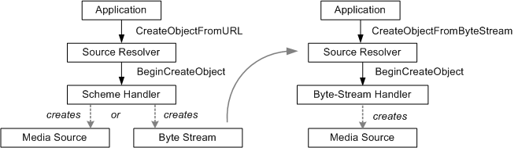

This topic describes the internal details of how the source resolver creates a media source. Read this topic if you are implementing a custom media source for Media Foundation, and you want the media source to be available to applications via the source resolver.
The source resolver can create a media source from a URL or from a byte stream (that is, an IMFByteStream pointer). To do so, it uses helper objects called handlers. For URLs, the source resolver uses scheme handlers. For byte streams, it uses byte-stream handlers.
A scheme handler takes a URL as input and creates either a media source or a byte stream. If it creates a byte stream, the source resolver will pass that to a byte-stream handler, which creates the media source. The following image illustrates this process.

Scheme handlers are used when the application calls IMFSourceResolver::CreateObjectFromURL or its asynchronous equivalent, BeginCreateObjectFromURL.
The source resolver looks up scheme handlers in the registry. Scheme handlers are listed by URL scheme, under the following keys:
HKEY_CURRENT_USER
   Software
      Microsoft
         Windows Media Foundation
            SchemeHandlers
               <scheme>
                  {00000000-0000-0000-0000-000000000000} = REG_SZ
HKEY_LOCAL_MACHINE
   Software
      Microsoft
         Windows Media Foundation
            SchemeHandlers
               <scheme>
                  {00000000-0000-0000-0000-000000000000} = REG_SZ
where <scheme> is the URL scheme that the handler is designed to parse. The scheme includes the trailing ':' character; for example, "http:".
To register a new scheme handler, add an entry whose name is the CLSID of the scheme handler, in canonical string form: {xxxxxxxx-xxxx-xxxx-xxxx-xxxxxxxxxxxx}. The value of the entry is a string (REG_SZ) containing a brief description of the handler, such as "My Scheme Handler." The important part of the entry is the CLSID. The source resolver creates the handler by calling CoCreateInstance with this CLSID.
Scheme handlers expose the IMFSchemeHandler interface. If the source resolver finds a scheme handler that matches the URL scheme, the source resolver calls IMFSchemeHandler::BeginCreateObject, passing in the original URL. The scheme handler will open the URL and attempt to parse the contents. At that point, the scheme handler has two options:
If it creates a media source, the source resolver returns the media source to the application. If it creates a byte stream, the source resolver attempts to find an appropriate byte-stream handler, as described in the next section.
Byte-stream handlers are used when the application calls IMFSourceResolver::CreateObjectFromByteStream or its asynchronous equivalent, BeginCreateObjectFromByteStream. They are also used when a scheme handler returns a byte stream, as described previously.
As with scheme handlers, byte-stream handlers are listed in the registry. They are listed either by file name extension or MIME type (or both), under the following keys:
HKEY_CURRENT_USER
   Software
      Microsoft
         Windows Media Foundation
            ByteStreamHandlers
               <ExtensionOrMimeType>
                  {00000000-0000-0000-0000-000000000000} = REG_SZ
HKEY_LOCAL_MACHINE
   Software
      Microsoft
         Windows Media Foundation
            ByteStreamHandlers
               <ExtensionOrMimeType>
                  {00000000-0000-0000-0000-000000000000} = REG_SZ
where <ExtensionOrMimeType> is the file name extension or MIME type. File extensions include the initial '.' character; for example, ".wmv".
The file name extension is part of the URL, provided by the application. The MIME type might be available through the MF_BYTESTREAM_CONTENT_TYPE attribute on the byte stream.
To register a new byte-stream handler, add an entry whose name is the CLSID of the handler, in canonical string form. The value of the entry is a string (REG_SZ) containing a brief description of the handler, such as "My Byte-Stream Handler." The source resolver calls CoCreateInstance to create the handler from the CLSID. You can register the same handler under more than one extension or MIME type.
Byte-stream handlers expose the IMFByteStreamHandler interface. If the source resolver finds a matching byte-stream handler, it calls IMFByteStreamHandler::BeginCreateObject. The input to this method is a pointer to the byte stream, plus the original URL, if available. The byte-stream handler reads from the byte stream until it parses enough data to create the media source.
Â
Â